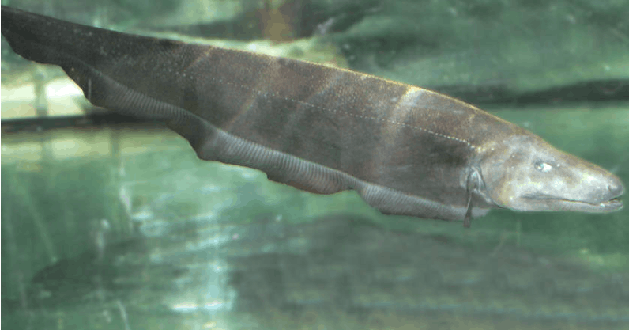

Systématique
- Ordre : Gymnotiformes
- Famille : Apteronotidae
- Genre : Apteronotus
- Espèce : A. bonapartii

Apteronotus bonapartii est un poisson-couteau de grande taille originaire des bassins de l'Amazone et de l'Orénoque.
C'est l'une des espèces les plus imposantes du genre, pouvant atteindre une longueur maximale de 53 cm. Sa morphologie est caractéristique : corps très allongé, comprimé latéralement, et profil de la tête effilé avec une bouche terminale et un museau allongé. Comme les autres Apteronotidae, il possède une petite nageoire caudale mais aucune nageoire dorsale ni pelvienne.
Sa coloration est variable mais généralement gris foncé, brun ou noir, souvent marbrée. Le menton et le dessus de la tête peuvent présenter des zones plus claires. Il utilise un organe électrique pour l'électrolocation.
C'est une espèce benthique qui fréquente les canaux principaux des grandes rivières, souvent à des profondeurs importantes et dans des courants forts. Il est actif principalement la nuit.
Très peu maintenu en aquarium en raison de sa taille et de ses besoins spécifiques. On suppose qu'il est territorial comme les autres membres de sa famille.
Mode : ovipare.
Aucune information précise sur la reproduction en captivité n'est disponible pour cette espèce.
Dimorphisme sexuel : Les mâles adultes atteignent une taille supérieure aux femelles et possèdent souvent un museau plus long et une mâchoire plus développée.
Espérance de vie : Aucune donnée précise, mais probablement supérieure à 10 ans en conditions adéquates.
Il est largement distribué dans le nord de l'Amérique du Sud, occupant les bassins de l'Amazone (Pérou, Brésil) et de l'Orénoque (Venezuela, Colombie). Il vit dans les eaux courantes et profondes.
Répartition

Origine naturelle :
- Bassin de l'Amazone (Pérou, Brésil).
- Bassin de l'Orénoque (Venezuela, Colombie).
- Rivières Ucayali, Marañón, Napo.
Paramètres de maintenance
Température : 23 à 28 °C.
pH : 6,0 à 7,5.
GH : Aucune donnée spécifique.
Courant : Fort (espèce rhéophile de profondeur).
Volume conseillé : Un volume extrêmement important est nécessaire (théoriquement > 800 L) pour héberger un poisson actif de plus de 50 cm.
Régime alimentaire
Régime : carnivore.
Il se nourrit de larves d'insectes, de crustacés et probablement de petits poissons dans son milieu naturel.